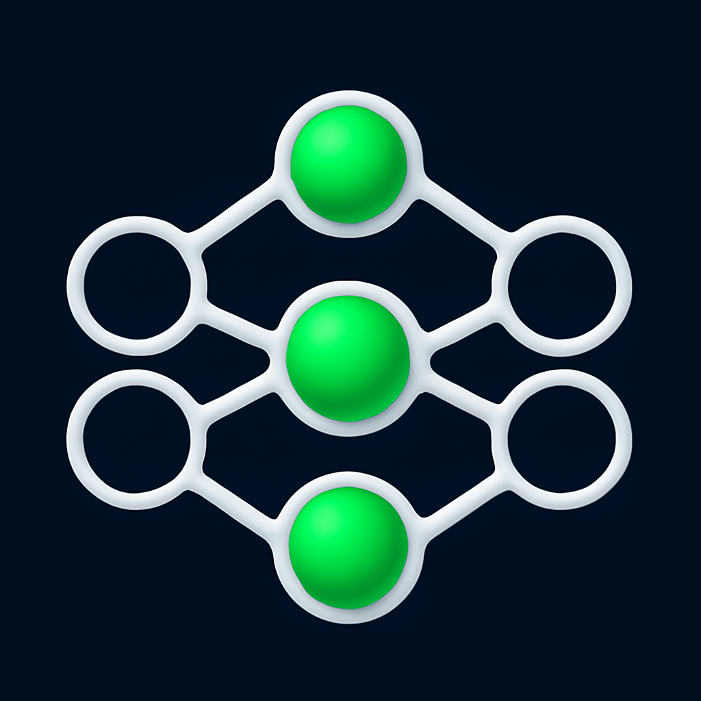

VisionSense
Autonomous Perception Dashboard
Connecting…
⏻
Shut Down
Shutting down VisionSense…
All ROS nodes (cameras, perception, depth, GUI) are stopping gracefully. You can close this window when it goes blank.
GPS
— · —
IMU
ax — ay — az —
DRIVER
—
HZ
fused — · depth — · driver — · bev —
Waiting for stream…
Fused Perception